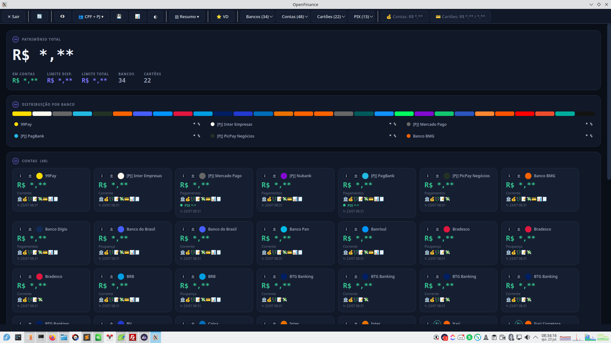
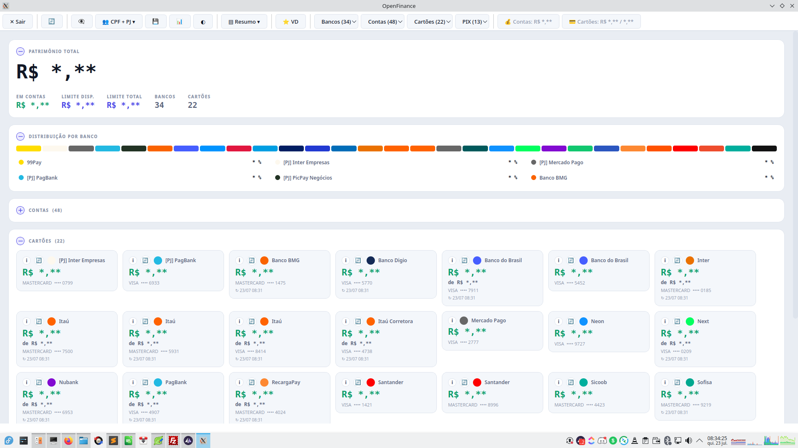
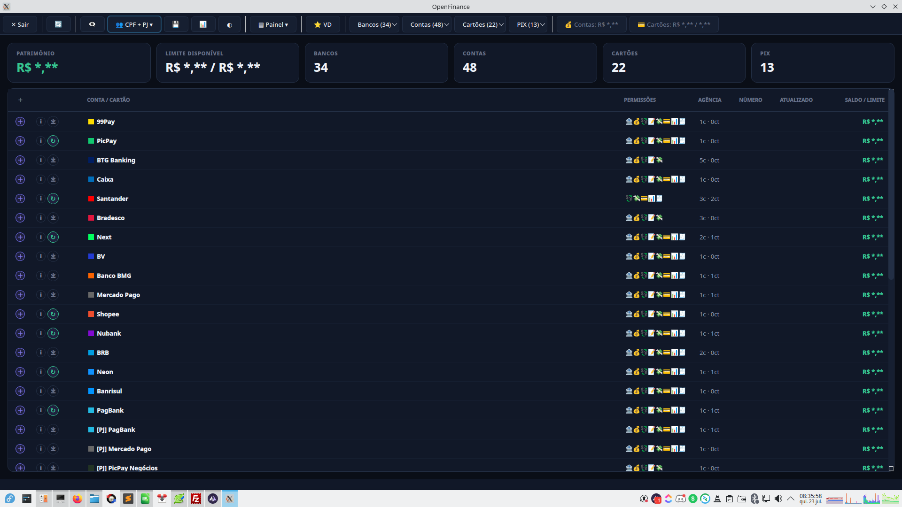
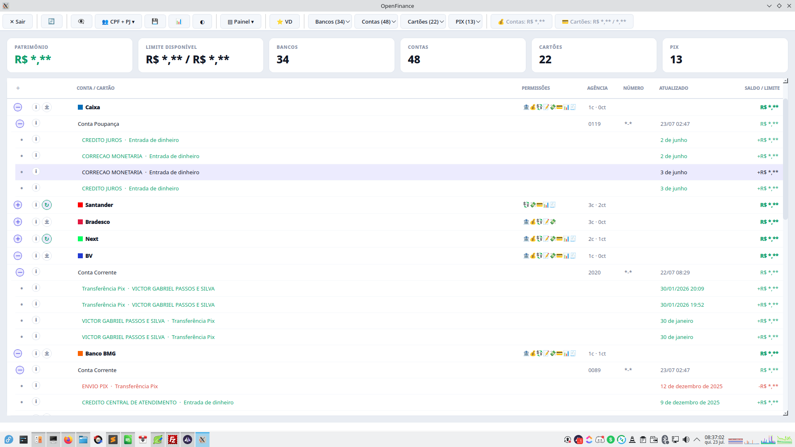
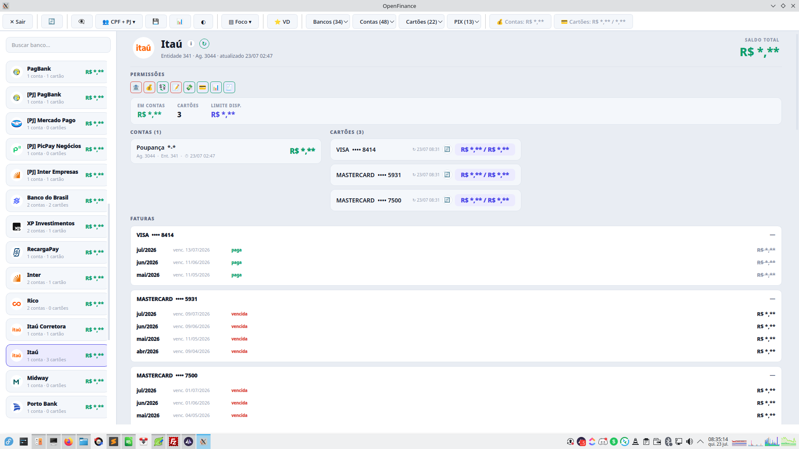
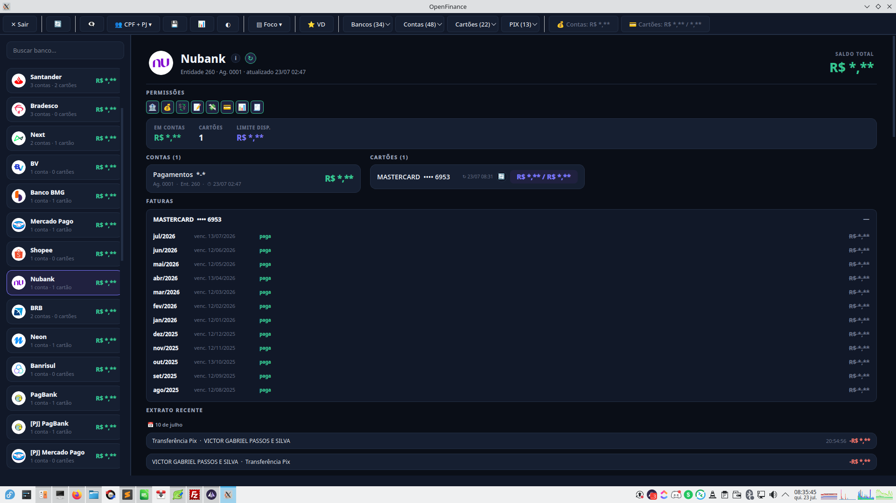

O que é
Software desenvolvido em C++ para Linux e Windows que consome dados do ecossistema OpenFinance e consolida, em uma única tela, todas as informações financeiras de todos os bancos vinculados, contas, cartões de crédito e autorizações Pix.
Ideal para uso corporativo, gestão patrimonial, tesouraria e qualquer cenário onde visibilidade financeira consolidada é crítica.
Screenshots






Capturas com os valores ocultos pelo modo de privacidade embutido.
Funcionalidades
Contas PF e PJ
Consolidação entre contas Pessoa Física (CPF) e contas Pessoa Jurídica (CNPJ).
Três visões da mesma base
A mesma consolidação pode ser exibida em três layouts, alternáveis a qualquer momento:
| Visão | Uso |
|---|---|
| Painel | Tabela densa agrupada por banco, com totalizadores no topo e extrato expansível conta a conta |
| Foco | Lista de bancos à esquerda e o detalhe completo da instituição selecionada à direita |
| Resumo | Cartões visuais com patrimônio total, distribuição por banco e blocos de contas e cartões |
Dados por instituição
Cada instituição financeira exibe:
- Contas: número da conta, tipo (corrente, poupança, pagamento) e saldo
- Cartões de crédito: número do cartão, bandeira (Visa, Mastercard, Elo, American Express), limite total e saldo atual
- Pix: indicação de autorização de uso e em qual conta está vinculada
- Permissões: quais consentimentos estão ativos naquela instituição
Totalizadores globais
Exibidos automaticamente no topo da tela:
- Soma dos saldos de todas as contas de todos os bancos
- Soma dos limites de todos os cartões de crédito
- Soma dos saldos de todos os cartões de crédito
Filtros de exibição
| Filtro | Descrição |
|---|---|
| CPF · PJ | Alterna entre a sessão Pessoa Física, a Pessoa Jurídica ou ambas somadas |
| Tudo | Exibe todos os bancos vinculados |
| Contas | Apenas bancos com ao menos uma conta ativa |
| Cartões | Apenas bancos com ao menos um cartão de crédito |
| Pix | Apenas bancos com autorização de uso do Pix |
| Favoritos | Bancos marcados manualmente como favoritos |
Extrato recente
Exibição e ocultação do extrato recente de todas as contas com um único comando. As transações capturadas ficam arquivadas localmente, então o histórico permanece disponível mesmo quando a instituição deixa de retorná-lo.
Atualização sob demanda
Cada banco, conta e cartão pode ser recarregado individualmente, e cada item mostra a data e a hora da sua última atualização.
Tema e privacidade
Alternância entre tema claro e escuro, e um modo que oculta todos os valores monetários, útil para apresentações, suporte e capturas de tela.
Relatório exportável
Geração de relatório completo com todas as informações de todos os bancos, contas e cartões de crédito, pronto para auditoria, conciliação ou arquivamento.
Stack técnica
| Item | Detalhe |
|---|---|
| Linguagem | C++ |
| Plataformas | Linux · Windows |
| Integração | OpenFinance Brasil |
| Interface | Desktop nativo (Qt6) |
| Armazenamento | Cache local para reabertura instantânea e histórico persistente |
| Exportação | Relatório em arquivo |
Casos de uso corporativo
- Tesouraria: visão instantânea de saldos disponíveis em múltiplas instituições
- Gestão patrimonial: acompanhamento de limites, saldos e exposição em cartões
- Compliance / Auditoria: relatório consolidado rastreável de todas as contas
- Open Banking interno: base para integrações com ERPs e sistemas de gestão financeira